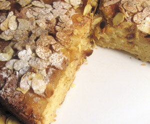

Baked Apple Pancake
5 von 6Preheat oven to 180 celsius. In a pan, sauté over medium heat 3 peeled, cored, cubed tart apples with 2 tbs butter and 1 tbs cinnamon for five minutes; spread evenly over pan. In a small bowl, mix 1 cup yoghurt, 1/2 cup sunflower oil, and 2 eggs. In a bigger bowl, sift 1 cup flour, 1/2 cup sugar, 1 envelope vanilla sugar, 1 envelope baking powder, a pinch of salt, and 1 tbs cinnamon. Gently stir ingredients from small bowl into big bowl. Pour mix over pan (pan must not have a plastic or other vulnerable handle! If so, use a cake pan) and bake until just set, about 35 minutes. Decorate with powdered sugar, slivered almonds, and cinnamon.
